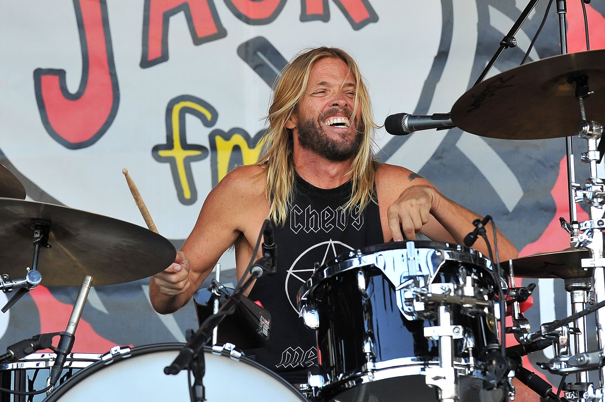

"His musical spirit and infectious laughter will live on with all
of us forever."
biography
Oliver Taylor Hawkins was born in Fort Worth, Texas, on February
17, 1972.
Before joining Foo Fighters in 1997, he was the touring drummer
for Sass Jordan and for Alanis Morissette, as well as the drummer
in the progressive experimental band Sylvia.
In addition to his drumming with the Foo Fighters, Hawkins also
provided vocals, guitar, and piano to various recordings.
He also contributed to the band's songwriting, and was listed as a
co-writer on every album since 1999. Foo Fighters first received a
Grammy Award for their music video for "Learn to Fly" in 2000.
In 2004, he formed his own side project, Taylor Hawkins and the
Coattail Riders, in which he played drums and sang, releasing
three studio albums between 2006 and 2019.
Taylor was voted Best Rock Drummer in
2005 by the British drumming magazine Rhythm.
Taylor and his wife, Alison, got married in 2005. Together they
have three children.
He formed the supergroup NHC with Jane's Addiction members Dave
Navarro and Chris Chaney in 2020, where he also took on lead vocal
and drumming duties.
He was inducted into the Rock and Roll Hall of Fame in 2021 as a
member of Foo Fighters.
He died at the age of 50 on March 25, 2022 in Bogota, Colombia
while on tour with Foo Fighters.
Taylor posthumously won three Grammys with the Foo Fighters on
April 3, 2022.
Taylor Hawkins was an American musician, singer and composer.

He is best known as the drummer of the rock band Foo Fighters.